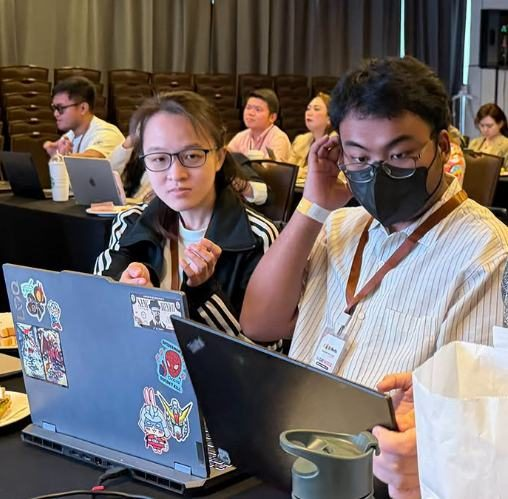

Events · Workshops · Connect
Community.
Workshops, masterclasses, forums and gatherings where professionals, founders and teams learn AI and business alongside each other.



Real people. Real work. Real learning.
Event highlights
From the room.
Community
Between events, keep going.
The Faith Works Community
A space to keep learning, share what you're applying, and stay connected between events.
Follow Faith Works
Stay updated
Hear about it first.
Notify me about upcoming workshops, events, and new resources.